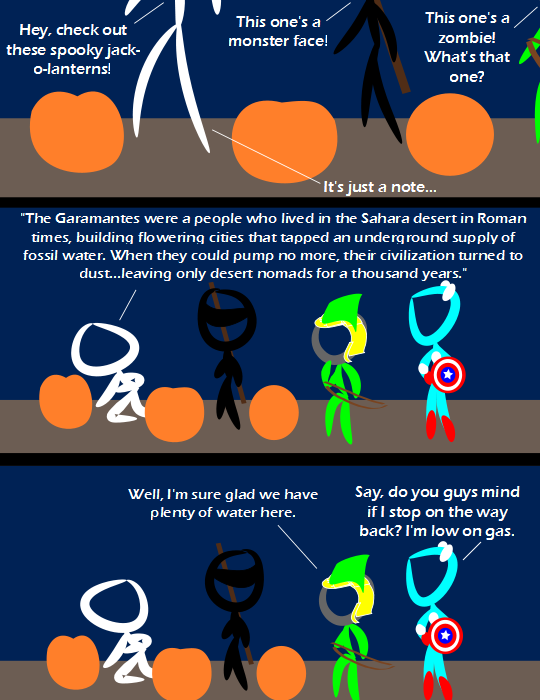

Comic JK 801
When I Feel Like It
⇤
<
?
>
⇥

⇤
<
?
>
⇥
Forum
.
RSS
.
Digg
.
Facebook
.
Reddit
.
Twitter
.
Stumbleupon
Enter your thoughts on number 801 here. Please, no spamming, trolling, phreaking, or drilling. Heh, awesome! Though to be fair, there's still a fair amount of oil left. It's not infinite, but we have time yet, and there are (painfully expensive) replacements. Of greater concern is fresh and clean water. Ogalalla Aquifer is running dry, and it's also fossil water. And given the amount of crap put into rivers and the amount of it we're taking out, cities that run on surface water aren't necessarily much better. >And where I am, we have enough water that we could supply five times the population with no negative environmental impact... But of course it is managed so badly that a quarter of the population don't seem to get enough. >>That's exactly my point. There's plenty of water; we're just idiots about how we use it. Because there's plenty of it. :p THE E-PARASITE ACT IS BAD. >It's like Clean Feed, only worse? I didn't notice the ninja until after I finished reading the comic <.< >You're already dead. Pumpkin details missing - where's the monster face? > On the other side? >> So jack-o-lantern heads aren't see-through? >>> Uh... no... Do we have to teach you everything all over again? >>>> Ninja heads and superhero heads are see-through, but not jack-o-lantern heads? Seems kind of arbitrary. >>>>>It's because they aren't heads. They're pumpkins. Everyone knows that pumpkins are opaque. Captain America looks way too bright... or is it some homosexual alter ego? > Agreed. Captain America does seem to appear somewhat feminine, as does Robin hood. The ghost and ninja on the other hand appear gender-neutral. >> The ghost seems to have an erection..... Doesn't appear gender neutral to me:D >>> mmmmm. Notes are SO hot. >>>> That is his hand... Waitaminute - someone managed to carve all that into a pumpkin? What did they use; a hypodermic needle? >Laser etching, actually